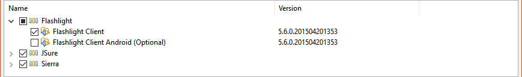
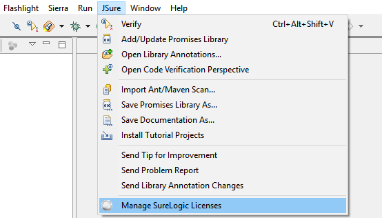
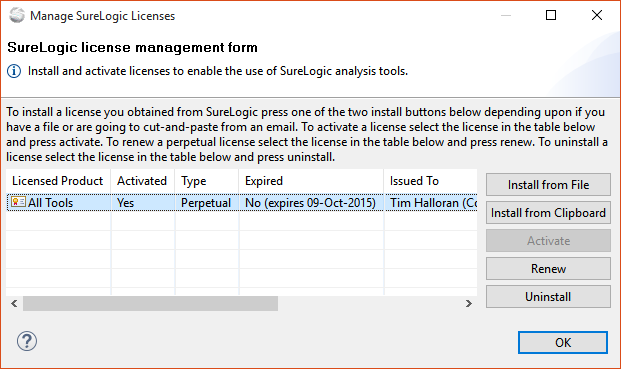
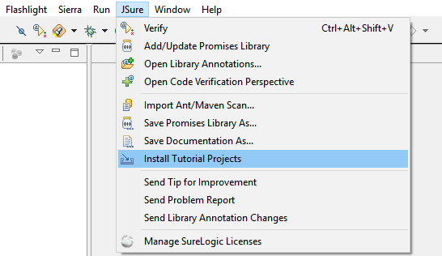

Download Ant/Maven tools for the current release
The current SureLogic tool release is version [[VER]]. You must be running Eclipse on a Java 7 (or higher) VM (more details below).
If you don't have a license you can get one here. You don't need a license to install the tools—just to use them.
It should take no more than 5 minutes for you to get up and running if you already have a working Eclipse installed on your machine. If you do not have Eclipse please go to the Eclipse Download Site and download and install a copy. If you have any problems getting our tools up and running, please email support@surelogic.com or file a report in our Bugzilla. We want you to have a good experience with our product and are ready to help. We realize that it can be difficult to navigate the Eclipse plug-in installation and management user interface.
or
point your Eclipse at the SureLogic update site:
[[UPS]]
The SureLogic tools contained in the Zip download are an archived Eclipse update site you can use to install the tools in your Eclipse IDE. The release is installed (and uninstalled) via the normal Eclipse mechanisms. Detailed instructions are given below.
When you install the tools into your Eclipse you can choose which to install. This section describes each feature to help you decide what to install. The following tools are available as Eclipse features:
The tools may be installed and used in versions 3.7.2 and higher of Eclipse (higher being recommend). Eclipse 4.4 (or higher) is needed for Java 8 support. If you are not sure if your version of Eclipse is supported please contact SureLogic. The Eclipse-based IBM Rational Application Developer for WebSphere Software (RAD) 8.0 is supported.
The current release of SureLogic Tools requires a Java 7 (or higher) VM be used to run the Eclipse that the tools are installed in. Note: Eclipse will unfortunately allow the tools to be installed even if it is running in a Java 1.6 VM, but on restart the SureLogic Tools will not show up in the menu. If you need more information on how to setup your Eclipse with multiple virtual machines, this video may prove useful.
Before you begin: Make sure that your operating system user has read/write access to the Eclipse directory. Plugin installation fails on some systems if Eclipse is unable to write to its installation directory. We also recommend that you allow roughly 1 GB of heap space for your Eclipse JVM. You can change this setting by modifying the -Xmx arguments in your eclipse.ini file located in your Eclipse installation directory. For example, under Eclipse 3.7 under Windows, you would change the last few lines of the eclipse.ini file from
-vmargs -Xms40m -Xmx384m
to
-vmargs -Xms40m -Xmx1g
If you are not using a Java 8 VM you should also consider setting Perm Gen to 512 MB. To do this change --launcher.XXMaxPermSize in eclipse.ini (there might be two entries in the file) as as below
--launcher.XXMaxPermSize 512m
Most modern Eclipse releases set this to 265 MB which might be okay for most uses. The best solution is to use a Java 8 VM in which Oracle removed Perm Gen—so you don't have to worry about it.
Select 'Help | Install New Software…' on the Eclipse main menu to open the 'Install' dialog.
At this point you have the option of installing using the archived update site or installing using the SureLogic web-based update site directly.
At this point, regardless of which installation method you choose, the dialog should list the SureLogic tool features as shown below.
Choose the features you want to install (or simply press 'Select All'), and press 'Next >' and step through the remaining wizard dialog steps. The features you are installing are not digitally signed, however, you should allow them to be installed if you are warned by Eclipse that it can't verify them. Finally, you should restart Eclipse when the installation is completed.
Do not check 'Flashlight Client Android (Optional)' if you do not have the Android Development Tools (ADT) installed in your Eclipse.. Please uncheck this optional feature as shown in the figure below.
When Eclipse restarts you should see an item on the Eclipse main menu for each tool that you installed. The first thing you need to do is to install the license provided to you by SureLogic. To do this select the 'Manage SureLogic Licenses' menu choice from bottom choice of the Eclipse main menu of any of the SureLogic tools (they all open the same dialog). The menu choice in the JSure Eclipse menu is shown in the figure below.
In the dialog that appears, press the 'Install from File' if you saved your license to a file or 'Install from Clipboard' if you copied the text of your license from an email, respectively. If you don't have a license you can get one here.
Once your license is loaded it may need to be activated. If so, highlight your license in the list of licenses and press 'Activate' to activate it. This step requires Internet access because the tool contacts SureLogic to verify your license is authentic. Your activated license may need to be renewed every now and then, e.g., every six months. To do this highlight the license and press 'Renew' to renew it. As with activation this step requires Internet access because the tool contacts SureLogic to verify your license is authentic.
See the 'Getting started' chapter of any of the tool User Guides for information on how you install your license and get up and running with the tool. The tool User Guides can by opened by selecting 'Help | Help Contents' from the Eclipse main menu. Alternatively you can choose the 'Save Documentation As...' menu item from any of the SureLogic tools to save an HTML version of the documentation to your disk and use your favorite browser to read the tool documentation.
To run the tutorials for Sierra, Flashlight, or JSure select the 'Install Tutorial Projects' menu choice from the Eclipse main menu for that tool. For example, For the JSure tool you would select 'JSure | Install Tutorial Projects' from the Eclipse main menu as shown in the figure below.
This action will import the tutorial projects into your workspace and open the Eclipse help up to the beginning of the first tutorial. We recommend that you take the time to step through each tutorial.
Also notice the 'Send Tip for Improvement' and 'Send Problem Report' menu items in the figure above. These menu items are your direct link to interact with the SureLogic engineers about your ideas to improve our tools and to report any problems you encounter. JSure (as shown above) allows you to send annotations you have changed on libraries to SureLogic for consideration in future releases via the 'Send Library Annotation Changes' menu item.
To learn more about how to use the tools select 'Help | Help Contents' and open the Sierra, Flashlight, or JSure User Guides. These guides contain tutorial and reference information about how to use the tools effectively. You may also use the 'Save Documentation As...' menu item to save a copy of the documentation to your disk in HTML format which can be loaded into any browser.
You can stay current with the latest versions of all of the SureLogic tools by checking for updates from Eclipse. If you have not configured Eclipse to periodically check for updates, you can check for tool updates by selecting 'Help | Check For Updates'. This will check the SureLogic update site at [[UPS]] for any updates, regardless of whether you installed the tools from the archive site or from the remote site.
If you use Ant or Maven you can download plugins for command-line use. Choose the entry you need in the table below. Unzip the file into a directory and follow the instructions in the tool documentation to add the SureLogic tool into your Ant or Maven build.
| Tool | Ant | Maven |
|---|---|---|
| Flashlight | flashlight-ant-[[SVER]].zip | Under Development |
| JSure | jsure-ant-[[SVER]].zip | Under Development |
| Sierra | sierra-ant-[[SVER]].zip | Under Development |
The JSure promises are included in each JSure tool release, however you can download the JAR for the current release here. The license for this JAR is open source so you can freely use it in your code—including commercial code— without any license from SureLogic.